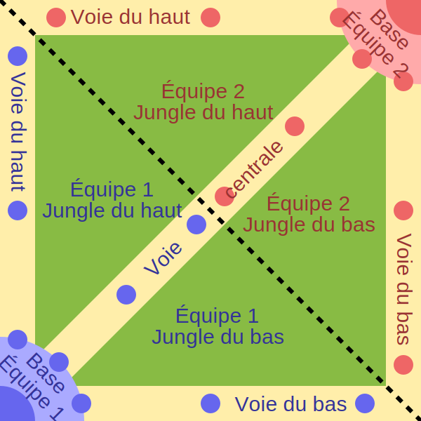
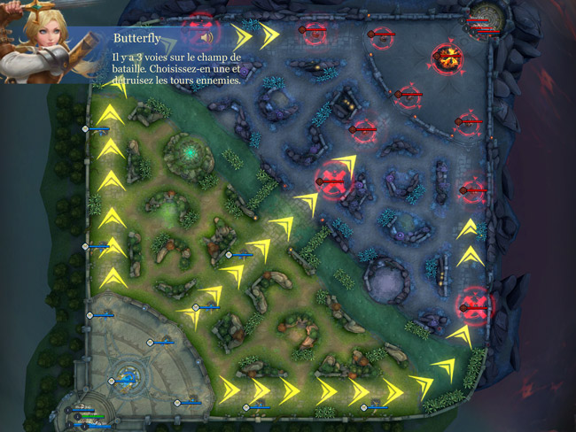
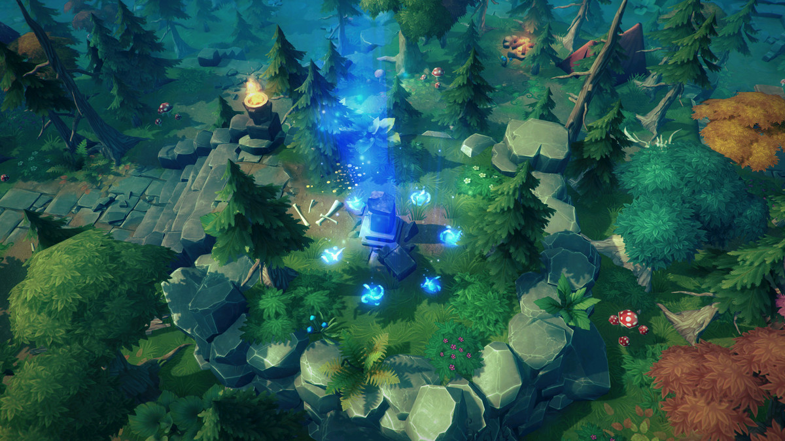
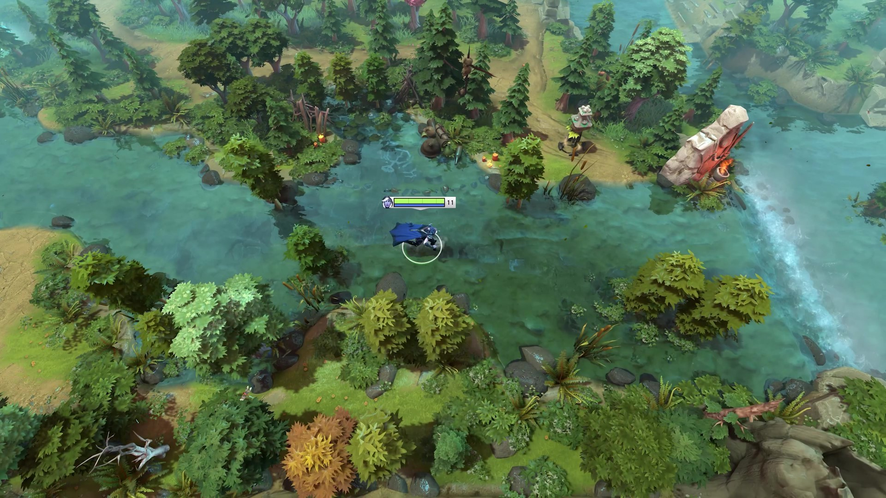
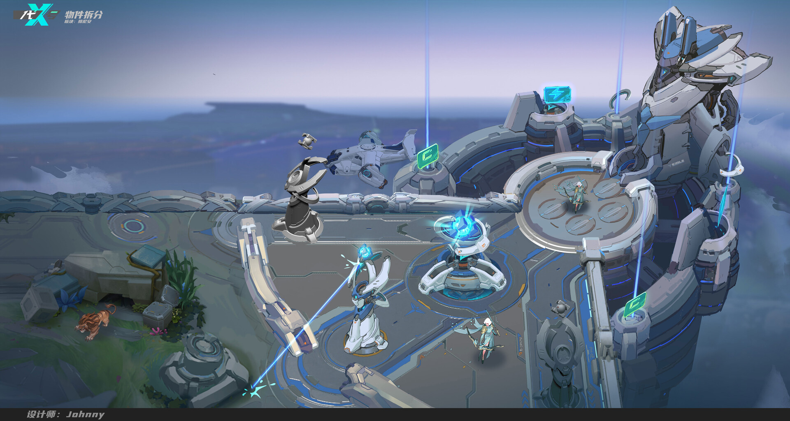

La carte est organisée de manière symétrique afin d’assurer un équilibre entre les deux équipes. Chaque zone de la carte a un rôle précis dans le déroulement de la partie.

Arène du jeu
Composition
Arène
Voies
La carte est composée de trois voies principales appelées lanes : la voie du haut (Top lane), la voie centrale (Mid lane) et la voie du bas (Bot lane). Ces voies relient les deux bases ennemies et sont parcourues par des minions qui apparaissent automatiquement et avancent vers la base adverse.

Voies
Tours
Les tours sont des structures défensives placées le long des voies. Elles attaquent automatiquement les ennemis qui s’approchent et protègent l’accès aux zones importantes de la carte. Détruire les tours permet de progresser vers la base adverse.

Tours
Jungle
La jungle est la zone située entre les voies. Elle contient des monstres neutres qui offrent de l’expérience et des bonus lorsqu’ils sont vaincus. Cette zone permet également de surprendre les ennemis grâce aux embuscades.

Jungle
Base
Chaque équipe possède une base située à une extrémité de la carte. La base est l’objectif principal du jeu : sa destruction entraîne la victoire de l’équipe adverse.

Base
Fontaine
La fontaine se trouve dans la base de chaque équipe. Elle permet aux héros de se soigner rapidement et d’acheter des équipements avant de retourner au combat.